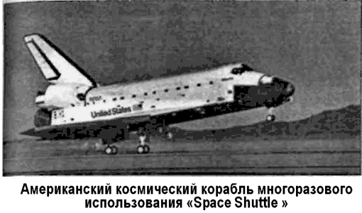
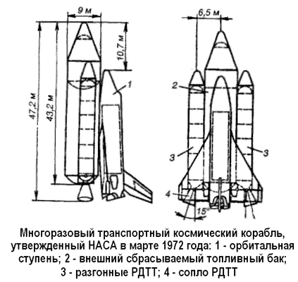
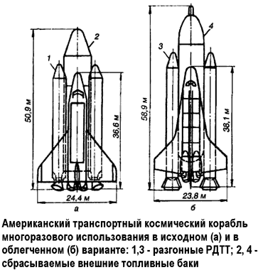
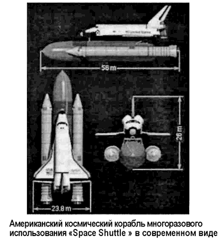

«Space Shuttle» как угроза равновесию
Официальной датой начала работ по созданию ракетно-космической системы «Спейс Шаттл» («Space Shuttle») считается 5 января 1972 года, когда президент США Ричард Никсон утвердил эту программу НАСА, согласованную с Министерством обороны.
По мнению военных специалистов США, с появлением космического корабля «Спейс Шаттл» должен был произойти качественный скачок в области использования околоземного пространства в военных целях.
Во-первых, космический корабль многоразового использования можно применять как средство для развертывания на орбите и регулярного технического обслуживания военных космических систем нового поколения. Во-вторых, это почти идеальный инструмент для решения целого ряда прикладных военных задач: инспекции, захвата или уничтожения вражеских орбитальных аппаратов, технического обслуживания собственных космических аппаратов на орбите, текущего или аварийного ремонта, дозаправки топливом, ввода в оперативное использование резервных аппаратов, ведения оперативной разведки и испытания экспериментальных образцов оружия в космосе.
Кроме того, при определенных условиях «Спейс Шаттл» может быть применен в качестве носителя ударных средств.
Работы по поиску технического облика такого рода системы начались в НАСА в сентябре 1969 года, через два месяца после высадки человека на Луну. По поручению президента США была создана группа ведущих специалистов — «Группа космических задач», которая изучала ближайшие пути развития американской программы использования космического пространства. В части транспортных систем группа сделала ряд выводов и рекомендаций, в которых указывалось, что «…Соединенные Штаты считают основной задачей сбалансированное развитие двух направлений космической программы: пилотируемых космических полетов и запусков автоматических космических аппаратов. Для достижения этой цели США должны […] разрабатывать совершенно новые космические системы […] в рамках программы, обеспечивающей новые возможности транспортных космических операций».
Уже с начала 1970 года НАСА вело интенсивные проектные и технико-экономические исследования в области ракетно-космических транспортных систем. Были рассмотрены полностью многоразовые пилотируемые транспортные системы, орбитальные корабли с одноразовыми подвесными твердотопливными и жидкостными ускорителями. Каждый вариант был подвергнут тщательной оценке с точки зрения риска разработки и затрат.
Так, по проекту фирмы «Норт Америкен» предлагался космический корабль, грузовой отсек которого располагался в районе центра масс орбитальной ступени. К передней части грузового отсека примыкали баки с кислородом и водородом, а в хвостовой части ступени расположен только бак с водородом. Кабина для двух членов экипажа и десяти пассажиров находилась в носовой части орбитальной ступени.
По другому проекту, предложенному фирмой «Макдоннелл Дуглас», орбитальная ступень имела треугольное крыло и вертикальный киль с рулевым управлением. Основные топливные баки были расположены один за другим вдоль нижней части фюзеляжа (впереди — бак с жидким кислородом, под грузовым отсеком — бак с жидким водородом). Два маршевых ЖРД находились в хвостовой части один над другим.
Над ними параллельно размещались два ЖРД системы маневрирования на орбите.
Для управления во время полета в атмосфере использовались руль направления, элевоны и щитки (при заходе на посадку). В крыле располагались четыре воздушно-реактивных двигателя, выдвигаемые при заходе на посадку.
Кабина экипажа находилась в носовой части. Впереди снизу располагался прямоугольный дестабилизатор, в каждой консоли которого содержалось пять ВРД. В хвостовой части фюзеляжа размещалось 12 ЖРД главной двигательной установки.
В крыле и дестабилизаторе — баки с горючим для ВРД.
Разгонная ступень была выполнена по схеме «утка». Фюзеляж ступени в основном занимают топливные баки. Разделение ступеней происходит на высоте 64 километров при скорости 3,3 км/с.

Вначале предполагалось, что и орбитальная и разгонная ступени космического корабля будут заходить на посадку с помощью воздушно-реактивных двигателей. Однако некоторые специалисты, в том числе летчики-испытатели, утверждали, что заход на посадку лучше совершать на большой скорости без использования двигателей. Поэтому было принято решение предусмотреть возможность снятия ВРД с орбитальной ступени после окончания этапа летных испытаний.
Сразу отказаться от этих двигателей руководство НАСА не решилось ввиду недостаточного объема информации по этой проблеме.
В 1971–1972 годах в НАСА приступили к более тщательному изучению проектов транспортного космического корабля многоразового использования.
После одобрения президентом планов создания транспортного корабля и определения примерных ассигнований (5,5–6,5 миллиарда долларов) на шестилетний период разработки, в январе 1972 года были опубликованы снимки и описания конструктивных схем, рекомендуемых в качестве вариантов, на базе которых должно продолжаться проектирование транспортного корабля.
Общим для всех схем было применение орбитальной ступени многократного использования с одним внешним топливным баком, сбрасываемым перед возвращением в атмосферу.
Предлагались два основных варианта, различающихся по составу разгонной ступени: с ракетными двигателями на твердом топливе однократного применения и с жидкостными ракетными двигателями с вытеснительной системой подачи компонентов топлива. Предусматривалось спасение разгонных ступеней с ЖРД после приводнения их в океане и повторное использование после восстановления.
В проектах как с РДТТ, так и с ЖРД на разгонной ступени были применены схемы с параллельным (со старта) и последовательным включением главных двигательных установок.
В марте 1972 года НАСА вновь изменило свою точку зрения на принципиальную схему транспортного космического корабля и рекомендовало принять к разработке новую схему.
По этой схеме орбитальная ступень с треугольным крылом и кислородно-водородными ЖРД монтируется на внешнем топливном баке диаметром 9 метров и длиной 44 метра.
К баку крепятся два разгонных РДТТ, предусматривалось их спасение после приводнения на парашютах, восстановление и использование до 20 раз.
РДТТ отделяется на высоте около 40 километров. Запуск ЖРД главной двигательной установки орбитальной ступени производится со старта вместе с разгонными РДТТ. Предполагалось увеличение ресурса орбитальной ступени со 100 до 500 полетов.
Выдав нескольким фирмам задание на проектирование транспортного корабля, НАСА остановило свое внимание на проекте компании «Норт Америкен» и заключило с ней контракт на шесть лет, субсидировав 2,6 миллиарда долларов.
Тут надо отметить, что фирмы, участвующие в конкурсе по разработке лучшего проекта транспортного космического корабля, представили предложения, не имеющие принципиальных отличий, но при выборе фирмы было принято во внимание то обстоятельство, что «Норт Америкен» затребовала на разработку такого корабля почти на миллиард долларов меньше, чем планировалось НАСА (3,5 миллиарда долларов).

Согласно проекту, космический корабль состоял из орбитальной ступени, внешнего сбрасываемого топливного бака и двух разгонных РДТТ. Орбитальная ступень имела самолетную схему с треугольным крылом. Длина ступени — 33,5 метра, высота 16,7 метра, размах — 24 метра.
Центральная часть корпуса занята отсеком полезного груза размером 18,3 на 4,5 метра. В отсеке можно разместить груз массой до 29,5 тонны или 12 пассажиров.
В хвостовой части корпуса находятся двигатели различного назначения, а в носовой — кабина экипажа, рассчитанная на четыре человека. Кабина состоит из двух секций: верхней — для командира экипажа и второго пилота и нижней — для двух операторов, обслуживающих приборы управления механизмами грузового отсека и системы проверок полезного груза. Приборы и органы управления для командира и его помощника полностью дублированы.
Стыковочное устройство орбитальной ступени размещено в верхней носовой части фюзеляжа для обеспечения визуального наблюдения за стыковкой с космическими аппаратами и работой космонавтов за бортом. Кабина экипажа связана со стыковочным устройством шлюзовой камеры, которая идентична камере, в свое время разработанной для стыковки космических кораблей «Союз» и «Аполлон».
Топливный бак длиной около 57 метров, диаметром 7,9 метра и массой около 31,7 тонны содержит жидкие кислород и водород для питания основной двигательной установки орбитальной ступени. Бак изготавливается из алюминиевого сплава и имеет теплозащитное покрытие на основе полиуретана.
Разгонные двигатели на твердом топливе крепятся к топливному баку. Длина РДТТ — около 46 метров, диаметр — 3,96 метра, стартовая масса — 100 тонн, тяга — 1600 тонн.
РДТТ включаются на старте одновременно с двигателями главной двигательной установки орбитальной ступени. Предполагалось, что обнуление тяги РДТТ и их сбрасывание будут осуществляться на высоте около 40 километров. Корпуса РДТТ в процессе падения наберут скорость до 15001600 км/ч, после чего сработает система спасения, состоящая из 3-10 парашютов.
Главная двигательная установка орбитальной ступени включает три двигателя, работающие на жидких водороде и кислороде. В хвостовой части фюзеляжа, рядом с ЖРД главной двигательной установки, размещаются два ракетных двигателя системы орбитального маневрирования тягой.
Кроме того, с обеих сторон хвостовой части фюзеляжа над крылом пристыковывается по одному РДТТ системы аварийного спасения. Они сбрасываются на заданной высоте.

По условиям контракта фирма должна была к 1978 году разработать, испытать и поставить НАСА два летных образца орбитальной ступени, запасные части и некоторое вспомогательное оборудование.
На начальной стадии эксплуатации предполагалось осуществлять не более 10 запусков транспортного корабля в год, а затем — до 60 запусков ежегодно.
В конце 1972 года в результате пересмотра технических требований к транспортному кораблю было принято решение внести изменения в его конструкцию. Во-первых, с целью улучшения аэродинамических характеристик была изменена общая конфигурация корабля. Во-вторых, отказались от использования аварийных РДТТ и ВРД.
В связи с некоторым смещением орбитальной ступени к хвостовой части сбрасываемого топливного бака, длина которого сократилась в результате увеличения утла раствора носового конуса с 20 до 30°, общая длина корабля уменьшилась с 62,8 до 61,6 метра. Внесение изменений в разгонные РДТТ и в орбитальную ступень привело к некоторому увеличению массы корабля (до 2450 тонн) и тяги двигателей при старте. Длина разгонных двигателей увеличилась с 46 до 56,4 метра.
РДТТ имели систему управления вектором тяги, что позволило применять их в качестве аварийных, если основные ЖРД орбитальной ступени выйдут из строя в течение первых 30 секунд полета. В этом случае разгонные РДТТ обеспечат подъем орбитальной ступени на высоту около 4300 метров, откуда она сможет планировать на землю.
В орбитальной ступени было предложено переделать носовую часть, перенеся стыковочный блок за кабину экипажа.
При этом конструкция кабины стала частью общей конструкции фюзеляжа.
После внесения изменений общая длина орбитальной ступени увеличилась до 38,3 метра, а размах крыла — до 25,6 метра. Габариты отсека полезного груза остались прежними.
Схема полета на транспортном космическом корабле многоразового использования выглядела следующим образом.
Вначале включаются три основных ЖРД орбитальной ступени. Как только они разовьют полную тягу, включаются два разгонных РДТТ. После того как отношение суммарной тяги к стартовой массе превысит единицу, освобождаются узлы крепления корабля к пусковой установке, и он стартует.
Отделение разгонных РДТТ происходит через 120 секунд полета, после того как корабль совершит начальный маневр по тангажу. В это время скорость должна быть 15 001 550 м/с, а высота полета около 45,5 километра.
После сбрасывания разгонных РДТТ орбитальная ступень с топливным баком выходит на орбиту высотой 80-160 километров. Ориентирование осуществляется таким образом, чтобы обеспечивались наиболее благоприятные условия для входа в атмосферу сбрасываемого топливного бака.
Перед сбрасыванием бака оставшееся в нем топливо сливается за борт, а после сбрасывания в его носовой части включается тормозной двигатель, обеспечивающий сход бака с орбиты.
В это же время орбитальная ступень, используя бортовую систему маневрирования, отходит от сброшенного топлив ного бака и приступает к выполнению поставленных перед ней задач.
По завершении программы полета орбитальная ступень выходит на траекторию возвращения на Землю. Вход в атмосферу осуществляется при постоянном угле атаки 32° до тех пор, пока скорость аппарата не упадет до 7 Махов. Затем ступень совершает маневр относительно поперечной оси и переходит на планирующий полет.
На конечном участке входа в атмосферу, начиная с высоты 120 километров, орбитальная ступень имеет достаточный запас энергии, чтобы обеспечить номинальную поперечную маневренность в пределах 2000 километров.
Специалисты НАСА рассчитывали, что скорость захода на посадку и скорость приземления ступени будут почти такими же, как и у современных мощных реактивных лайнеров — в пределах 315 км/ч.
Продолжая исследовательские работы, НАСА весной 1973 года утвердило проект облегченного варианта транспортного космического корабля, главным исполнителем которого была фирма «Рокуэл».
В результате изменений, внесенных в конструкцию орбитальной ступени и разгонных РДТТ, фирме удалось значительно снизить массу корабля, сохранив тем не менее его способность доставлять на орбиту полезный груз весом 29,5 тонны.
Стартовая масса облегченного варианта корабля предполагалась 1810 тонн, а масса незаправленной орбитальной ступени — 8 тонн. Указывалось, что при использовании облегченного варианта корабля стоимость доставки на орбиту одного килограмма полезного груза составит немногим более 350 долларов (410 долларов — в исходном варианте).
Основное отличие орбитальной ступени облегченного варианта от исходного состояло в применении крыла новой формы, площадь его на 16 % меньше площади крыла в исходном варианте. Новое крыло обладало лучшим аэродинамическим качеством и на 9 тонн легче.
Отсек полезного груза имел длину 19 метров, ширину — 5,2 метра и высоту — около 4 метров.
На орбитальной ступени использовано вертикальное хвостовое оперение обычной самолетной схемы с рулем направления и тормозным щитком.
Система маневрирования ступени состояла из двух ЖРД, установленных в гондолах с обеих сторон хвостовой части корпуса. Она предназначалась для изменения параметров орбиты и выполнения действий, связанных со встречей и стыковкой, обеспечивающих сход с орбиты.
Топливный бак питал основные ЖРД орбитальной ступени с момента старта и почти до выхода на орбиту. При этом предусматривалась такая процедура запуска, при которой топливный бак сбрасывается непосредственно перед выходом ступени на орбиту, что исключало необходимость применения тормозных двигателей и оборудования для обеспечения схода с орбиты, а это в свою очередь позволило уменьшить массу и снизить стоимость. Что касается стартовых РДТТ, то они, согласно проекту, имели систему управления вектором тяги.
НАСА и авиационным фирмам, работавшим над проектом нового транспортного корабля, получившего название «Космический челнок» («Space Shuttle»), не удалось уложиться ни в заявленные сроки, ни в заявленную стоимость.
Так, общая стоимость проекта возросла с 5,2 миллиарда (1971 год) до 10,1 миллиарда долларов (1982 год). Стоимость одного пуска выросла с 10,5 миллионов до 240 миллионов долларов.
Первоначально предполагалось изготовить пять экземпляров орбитального самолета, однако в целях уменьшения общих затрат было изготовлено всего четыре летных образца аппарата. Эти аппараты получили названия «Колумбия», «Дискавери», «Челленджер» и «Атлантис».
Первый космический старт «челнока» «Колумбия» состоялся 12 апреля 1981 года; при этом он провел в космосе более двух суток.
Уже в ходе эксплуатации системы «Спейс Шаттл» выяснилось, что она не обеспечивает достаточную надежность полетов в космос, особенно во время запуска. Это стало очевидно всем только после катастрофы «челнока» «Челленджер», случившейся в небе Флориды 28 января 1986 года при двадцать пятом запуске транспортного корабля системы «Спейс Шаттл». В результате катастрофы погибли семь американских астронавтов. Только прямые убытки от катастрофы «Челленджера» составили почти 2 миллиарда долларов, из которых примерно 1,5 миллиарда приходится на сам «Челленджер».
После потери «Челленджера» американцам пришлось построить пятый орбитальный самолет. Новый аппарат, получивший название «Индевер» («Endeavour»), стартовал в мае 1992 года.

До катастрофы «Челленджера» считали, что с помощью «Шаттлов» ежегодно можно будет произвести от 20 до 24 запусков, поэтому американцы собирались в будущем практически отказаться от применения одноразовых ракет-носителей.
Уже после катастрофы им срочно пришлось восстановить производство некоторых одноразовых ракет, включая «Дельту», «Атлас» и «Титан». Одновременно было решено разработать и изготовить новые одноразовые системы различной грузоподъемности, которые бы значительно расширили возможности США в выполнении космических полетов.
Естественно, все случившееся еще более усугубило положение системы «Спейс Шаттл». Теперь уже не могло идти и речи о том, что подобные космические «челноки» выгоднее одноразовых носителей.
Однако тридцать лет назад «Спейс Шаттл» казался вполне реальной угрозой, способной пошатнуть сложившийся баланс сил. Космический «челнок» мог выслеживать советские космические аппараты, изучать и уничтожать их. Даже габариты грузового отсека корабля «Спейс Шаттл» были выбраны, исходя из возможности захвата, размещения в отсеке и возвращения в нем на Землю пилотируемой орбитальной станции «Алмаз».
С другой стороны, в этом грузовом отсеке можно было разместить до 30 ядерных управляемых боеголовок. Исследования, проведенные в институте прикладной механики АН СССР (теперь — Институт имени Мстислава Келдыша), показали, что «Спейс Шаттл» позволял во время маневра возврата с орбиты по традиционной трассе, проходящей с юга над Москвой и Ленинградом, сделать некоторое снижение — «нырок» — и сбросить ядерный заряд в районе этих городов. В совокупности с действиями других привлеченных средств это бы парализовало систему боевого управления Советского Союза.
На основе результатов анализа академик Келдыш направил доклад в ЦК КПСС. Состоялся разбор, в результате которого Леонид Брежнев принял решение о разработке комплекса альтернативных мер с целью обеспечения гарантированной безопасности страны. Работа над советским «шаттлом» началась…